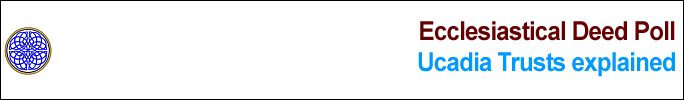

| Ucadia Trusts are the types and rules of Trusts as defined by the most sacred Covenant Pactum de Singularis Caelum and also defined by Divine Canon Law such as Positive Law. | ||
| What is a Trust? | ||
| A Trust is a fictional Form of Relationship and Agreement whereby certain Form, Rights and Obligations are lawfully conveyed to the control of one or more Persons as administrators for the benefit of one or more other Persons. | ||
| All valid Trusts possess the following characteristics known as the Standard Characteristics of Trust: | ||
| (i) A Trust Instrument, also known as a Trust Deed identifying the essential Form of the Trust, the Property to be conveyed to create the Trust and how the Trust shall be administered; and | ||
| (ii) An Owner of the Property or authorized Person having permission to create the Trust Instrument and convey the Form and Property into the Trust as Grantor or Testator; and | ||
| (iii) A collection of Property within the Trust defined as the Trust Corpus, also Trust Body or Body Corporate; and | ||
| (iv) At least one Executor of the Trust possessing the highest administrative authority and function over the Trust, either appointed by the Owner of the Property conveyed into the Trust, or by a Public Executor (Public Trustee) if a Cestui Que Vie Trust or the Beneficiary of the Trust if the beneficiary is also the Grantor; and | ||
| (v) At least one Administrator of the Trust, also known as the Trustee, who is neither the Owner nor authorized Person who conveyed the property into the Trust, appointed by and responsible to the Executor in accordance with the Trust Instrument who is then responsible for the administration of the assets of the Trust being the Trust Corpus also being the collection of Property; and | ||
| (vi) A Separate and unique set of Accounts held by the Trustee(s), also known as a separate fund, for the recording of all administrative transactions and duties; and | ||
| (vii) The formalization of the rights of Property conveyed into the Trust into a Legal Title held by the Trustees and one or more Equitable Title(s) permitting one or more beneficiaries lawful use of property of the Trust, consistent with the Trust Instrument; and | ||
| (viii) One or more beneficiaries. | ||
| What/who is an Executor, Trustee and Beneficiary? | ||
| The flesh, person or persons that administer a Trust are called the Executors and Trustee(s), collectively also known as "administrators" for the benefit of one or more beneficiaries: | ||
| (i) The role of Executors is equivalent to the function of Directors of a corporation, holding legal title to the trust property and by the original intent and design of all trusts effectively assume the former powers and rights of the Owner of the Realty or Property conveyed into Trust without being called the Owner. The trustees then owe a fiduciary duty to the beneficiaries, who are the "beneficial" owners of the trust property; and | ||
| (ii) The role of Trustees is equivalent to the function of Employees of a corporation, who are appointed by the Executor. The primary obligations of the Trustee as a "servant" of the trust is to follow the instructions of the Executor in accordance with the Trust Deed. When an employee of a government department a trustee is known as a "public servant"; and | ||
| (iii) The role of the Beneficiaries is equivalent to the function of Shareholders of a corporation, who have the ultimate authority in appointing the Directors (Executors) and receiving the benefits of the Trust. | ||
| What is the correct capitalization/naming for Trusts? | ||
| In accordance with your Live Borne Record and Ucadia Time, the Divine Creator through the Society of One Heaven claims both the Event, the superior Title and reclaims the property stolen from you, such as your name. Therefore, the use of your name granted to you by your parents at birth is yours to use and the Roman Cult, its agents as well as the Parasites have no lawful or legal right to claim this as their property whatsoever. | ||
| The Trust Number is the Trust Number, not the Trust Name. There may be some confusion because under certain circumstances a True Person may identify themselves as "Trust Recipient Number" which is correct but purely for the purpose of avoiding false presumptions by agents of the Roman and Parasite system "assuming" you are agreeing to their claims of title. | ||
| In all other cases, the name of your True Trust is the name granted to you by your parents when you were born. | ||
| As to the question of capitalization, proper case and lower case: | ||
| Lowercase is used to describe actual primary objects and concepts and generalized nouns. For example "james anthony bloggs" on the Live Borne Record refers to the name of the trust as a primary object. | ||
| Propercase is used to describe official positions such as trustee from the primary object and therefore proper noun. For example "James Anthony Bloggs" refers to the Trustee of the trust james anthony bloggs. | ||
| Uppercase is used to describe the trust corpus, also known as the corporate person or corporation of the trust. For example "JAMES ANTHONY BLOGGS" refers to the Beneficiary and the Trust Corpus (Person) of the trust called james anthony bloggs. | ||
| What is a Divine Trust? | ||
| A Divine Trust is a purely Spiritual Trust validly registered into the Great Register and Public Record of One Heaven containing actual Spiritual Form as well as Divine Property administered by the Treasury of One Heaven as Trustee in accordance with the sacred Covenant Pactum de Singularis Caelum as Sacred Deed for the Benefice of a Divine Person. | ||
| In accordance with these canons, a Divine Trust has been created and exists for every single man, woman and higher order spirit that has ever existed, or is living at this moment. | ||
| By definition of Divine Law and Natural Law, the Divine Creator is the one, true and only owner of all objects and concept. This is because, except for the Divine Creator, objects and concepts cannot “own” one another, only themselves. This also means that a fiction, such as a Trust, cannot “own” or hold any object or concept, only another fiction. | ||
| A Divine Trust is the highest possible form of Trust and unique as the only possible type of Trust that can hold actual Form, rather than the Rights of Use of Form being Property. A Divine Trust can never be terminated. | ||
| A Divine Trust is formed when a Divine Immortal Spirit, being part of the Divine, agrees with the Collective Divine known as Unique Collective Awareness to be recognized as a Unique Member of the Divine in accordance with the sacred Covenant Pactum De Singularis Caelum. Into the Divine Trust is then placed one unit (1) representing one unique divine immortal spirit and mind, one unit (1) representing the unique energy, life experience and creation from the beginning and one unit (1) representing all regrets, debt, mistakes, destructive acts sometimes described as “sins” from the beginning collectively known as the Divine Form. | ||
| In accordance with the sacred covenant Pactum De Singularis Caelum, a Divine Immortal Spirit is defined as any Unique Collective Awareness associated with the formation and existence of a specific form of matter within a level of space within the Universe. Therefore the Universe as a whole is a Divine Immortal Spirit, the Milky Way Galaxy is a Divine Immortal Spirit as well as physical aggregate of matter as is the Divine Immortal Spirit of a member of the Homo Sapien species native to the planet Earth. | ||
| The Divine Form is conveyed into a valid Divine Trust for a Divine Immortal Spirit is known as the Divine Corpus, or Divine Living Body representing a valid legal personality known as the Divine Person. | ||
| No Form contained within a valid Divine Trust may be conveyed, nor any transactions or effects undertaken on behalf of the Trust unless it is in accord with these canons and the sacred covenant Pactum De Singularis Caelum. | ||
| Any claimed ownership, conveyance, lien, or other fictional device over any Form within a Divine Trust that are not in accordance with these canons is a fraud and gross injury to the Divine Creator and therefore automatically null and void from the beginning. | ||
| A Divine Immortal Spirit may only be associated with one (1) valid Divine Trust and therefore one (1) valid Divine Person. | ||
| A Divine Person created for an organic higher order life form may only be associated with one (1) flesh vessel as Trustee of a valid True Trust and therefore one (1) valid True Person whilst the flesh lives. | ||
| In accordance with the sacred covenant Pactum De Singularis Caelum, every child or higher order spirit that is borne from now until the end of time possesses a Divine Personality through the creation of their Divine Trust before any other legal entity or claim. | ||
| When a particular Divine Person of an organic higher order life form no longer has any valid association to a True Trust and a living flesh vessel, then an association is permitted whereby one hundred (100) Divine Persons in similar condition come together as an aggregate to form a Supreme Divine Trust. | ||
| In accordance with these canons and the sacred Covenant Pactum De Singularis Caelum, all men, women and higher order life, living and deceased are members of One Heaven, therefore possessing a unique Divine Trust and Divine Personality as demonstrated and proven by the existence of a unique Membership number for them. | ||
| As all men, woman and higher order spirits, living and deceased are automatically Members of One Heaven in accordance with the sacred Covenant Pactum De Singularis Caelum it is not necessary to give further notice to any man, woman or higher spirit of the existence of their Divine Trust beyond the publication of these canons and the sacred covenant to this fact. | ||
| The Divine Creator is the owner of all Divine Trusts. Therefore, no individual spirit, person, entity or aggregate has the lawful right to demand the termination of a Divine Trust and a Divine Person. | ||
Summary of Divine Trust (OH3456-123456-123456) Grantor = Divine Creator Trustee(s) = Great Spirits administering the Treasury of One Heaven Beneficiary = Divine Person, also known as "Divine Immortal Spirit" and "Soul" |
||
| What is a True Trust? | ||
| A True Trust is a form of Living Trust containing Divine Property known as Divine Rights of Use, or Divinity that is validly registered into the Great Register and Public Record of a global Ucadian society. A True Trust may be for a single man, or woman called a “True Person Trust”, a True Location Trust containing Divine Right of Possession of Promised Land, or an aggregate trust such as a Universal True Trust, Global True Trust or Civil True Trust. | ||
| By definition, Divinity or Divine Rights of Use cannot exist without the existence of a Divine Trust. Therefore, no valid True Trust may exist unless it is connected and created from a valid Divine Trust. | ||
| A True Trust is the second highest possible form of any type of Trust holding the highest possible form of any kind of property being Divine Rights of Use known as Divinity. | ||
| A True Trust may only be associated with one (1) valid Divine Trust and therefore one (1) valid Divine Person. A Divine Person is always the owner and grantor of a valid True Trust. | ||
| A True Person Trust is formed when a Divine Person grants certain Divine Rights of Use, known as Divinity into the True Person Trust creating the Trust Corpus of the True Trust, also known as the True Body Corporate, also known as the True Person, having legal personality. The flesh vessel, also known as the living flesh, also known as the living body of the organic higher order life form is always the Trustee with the True Person as beneficiary. | ||
| Birth of the flesh is proof of lawful conveyance to a True Trust and the result of consent. The existence of living flesh is proof alone of the existence of a True Trust and a sacred relationship with a Divine Trust. | ||
| When the Trustee dies, the True Person also dies. As a Living (Inter Vivos) Trust, a True Trust lawfully terminates upon the death of the Person or Juridic Person listed as beneficiary. | ||
| Any property rights granted from a True Trust may only be conveyed to a superior trust of the same name and no other. | ||
| In accordance with the sacred Covenant Pactum De Singularis Caelum, each and every living man and woman have been duly appointed Trustee of a unique True Trust through the conveyance of Divine Rights by Divine Personality. | ||
Summary of True Trust (123456-123456-123456) Grantor = Divine Person (Beneficiary of Divine Trust) Trustee(s) = Living Flesh eg (James Anthony Bloggs) Beneficiary = True Person eg (JAMES ANTHONY BLOGGS) |
||
| What is a Superior Trust? | ||
| A Superior Trust is a form of Living Trust validly registered into the Great Register and Public Record of a global, or national, or local Ucadian society or entity containing Real Property, also known as Realty, being the highest form of Rights of Use of Object and Concepts administered in accordance with these canons and its sacred Covenant as Deed for the Benefit of a Superior Person. A Superior Trust is the third highest form of Trust. | ||
| When you reclaim the occupation of your land and home, you dont convey it into your true trust but create a Superior Trust "owned" by your True Trust. | ||
| Similarly, when you open a bank account, you don't convey property into your true trust but create a new Superior Trust "owned" by your True Trust. | ||
| In other words, all your personal property and real property associated with your Trust Trust are actually contained within Superior Trusts. | ||
| Superior Trusts are administered by the appropriate Ucadian Society which is why Superior Trusts always begin with the identifier of the appropriate Nation or Regional Union to which the Superior Trust is registered. | ||
Summary of Superior Trust (MZ3456-123456-123456) Grantor = True Person (Beneficiary of True Trust) Trustee(s) = Appropriate Ucadian Society/Agency Beneficiary = Superior Person eg (JAMES ANTHONY BLOGGS, INSURED MEMBER) |
||
Copyright © One-Heaven.Org Ab Initio. All Rights Reserved |
||